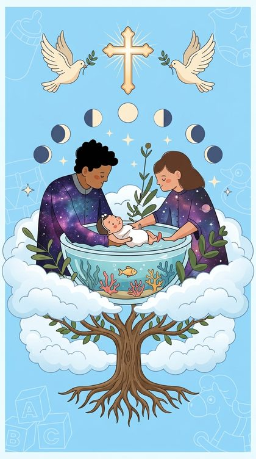
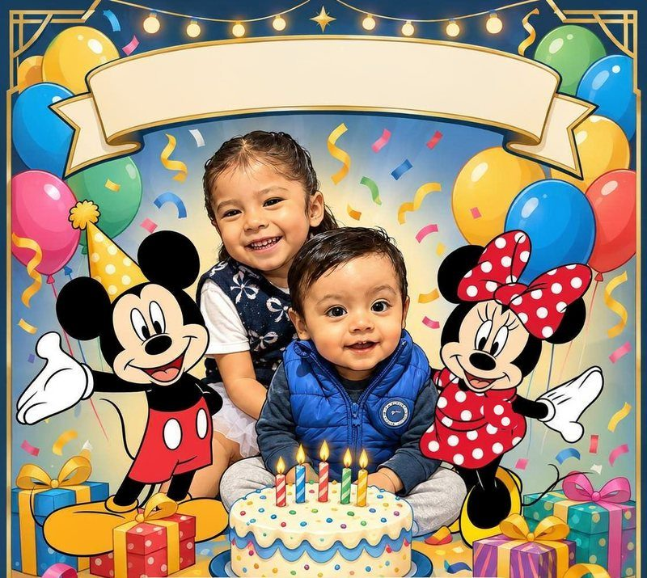
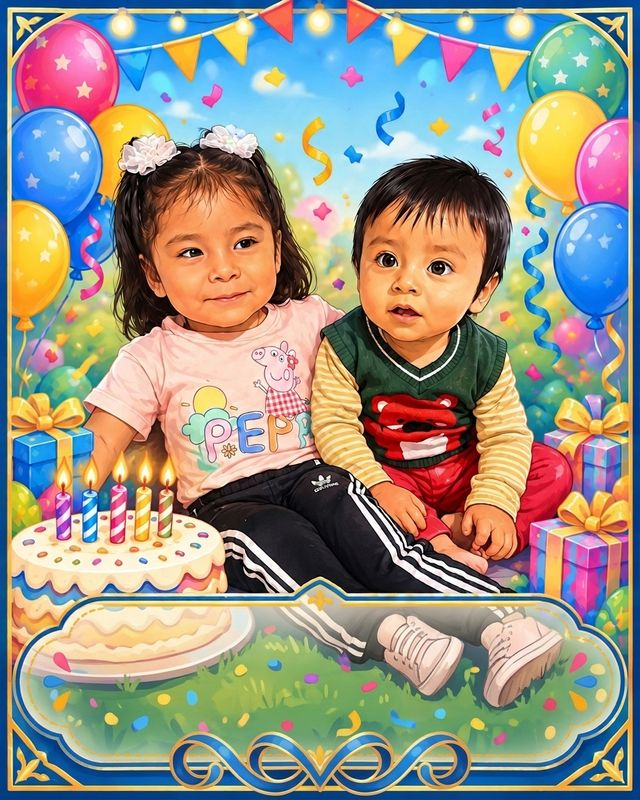
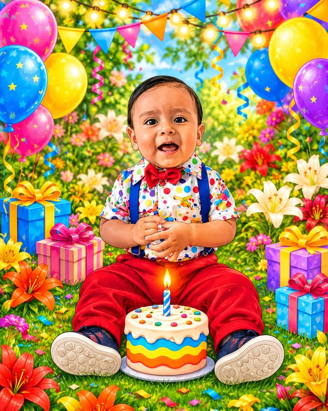
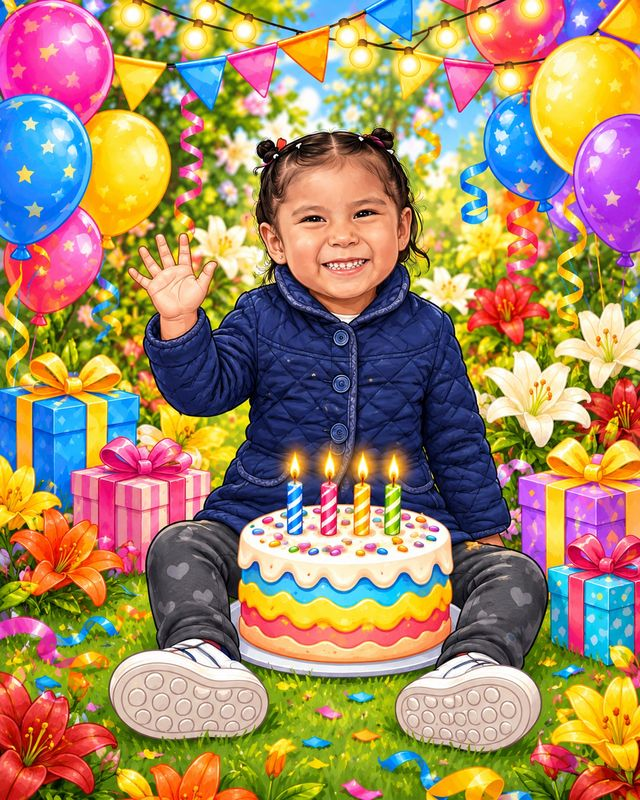

Misa de bautizo (Jesús Adrián)
Misa acción de gracia (Nina María)
Parroquia Santa María Guadalupe
C. Iturbide 52, El Reposo, La Piragua, 68310 San Juan Bautista Tuxtepec, Oax.
Ver mapaJesús Adrián & Nina María
Cargando 0%
Bautizo

Jesús Adrián
Cumpleaños
Nina María · 4 años

Una doble celebración
Con mucho cariño para
Nuestro invitado especial
Jesús Adrián recibirá el sacramento del bautismo y Nina María cumple cuatro años. Queremos compartir con ustedes esta alegría, y no sería igual sin su compañía.
Parroquia Santa María Guadalupe
C. Iturbide 52, El Reposo, La Piragua, 68310 San Juan Bautista Tuxtepec, Oax.
Ver mapaCasa de los abuelos paternos
Avenida 5 de Mayo #41, San Francisco Salsipuedes, 68442
Ver mapaJesús Adrián y Nina María, listos para celebrar con ustedes.



Toca una foto para verla en grande
Su compañía es nuestro mejor regalo. Si desean tener un detalle con los niños, aquí encontrarán algunas ideas.
Ver mesa de regalosAvísanos si nos acompañas para reservar tu lugar.